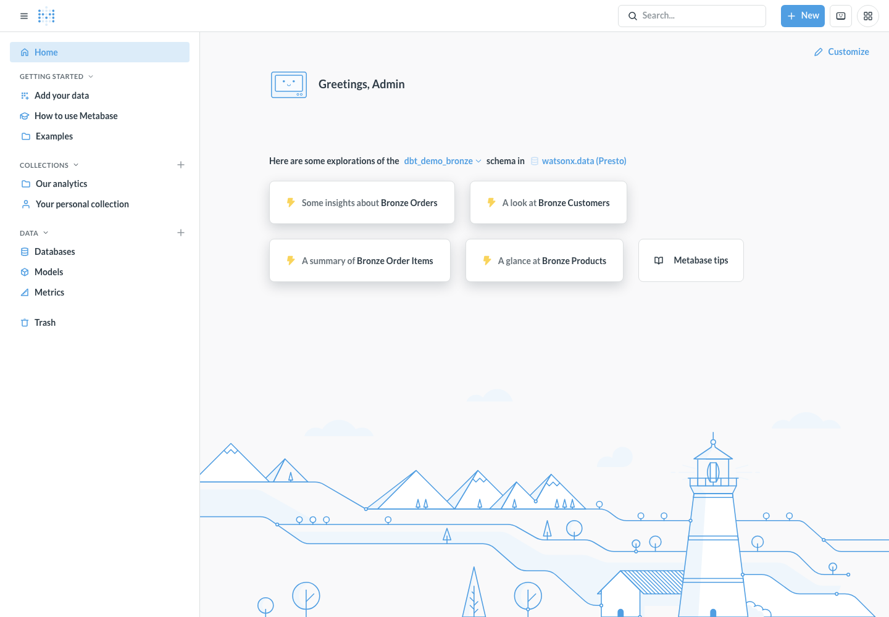

Metabase: Explore & Chart the Lakehouse in a Local Docker UI

What Metabase does
Metabase is a business-intelligence (BI) tool — a point-and-click way to browse tables, write SQL, and build charts and dashboards. Unlike OpenMetadata (which reads dbt's JSON files offline to draw lineage), Metabase connects live to the Presto engine in watsonx.data and queries the real data. Point it at the iceberg_data catalog and you can see every medallion schema — dbt_demo_{raw,bronze,silver,gold}, spark_demo_{bronze,silver,gold}, and spark_demo_cpdctl_raw — and chart Gold tables without leaving the browser at localhost:3000.
This stack is self-provisioning: a one-shot container creates the admin login and wires up the Presto connection for you on first boot, using the same .env values the rest of the demo uses. No setup wizard, no manual SSL fiddling.
Metabase is OPTIONAL in this demo
Nothing in the medallion pipeline needs Metabase. The dbt and Spark paths build every raw → bronze → silver → gold table on their own, and you can query the results with python scripts/query_gold.py or the SQL comparison demo. Metabase is here purely so you can see and chart those gold tables in a friendly browser UI. Skip it if you only want the pipeline; run it if you want a BI front end.
Architecture
flowchart LR
env[".env\nWXD_* values"]
prov["metabase-provision\n(one-shot)\nsetup API + add DB"]
mb["Metabase server\nDocker on localhost:3000"]
pg["metabase-postgres\n(app DB: users, charts)"]
presto["watsonx.data Presto\niceberg_data catalog"]
browser["Browser\nlocalhost:3000"]
env --> prov --> mb
mb --> pg
mb -->|"PrestoDB JDBC + TLS"| presto
browser --> mbThe same WXD_* values that drive dbt and Spark drive Metabase — nothing is duplicated. The watsonx.data CA (certs/watsonxdata-ca.pem) is read straight from the repo at boot and trusted by the JVM; it is never copied.
Prerequisites
- Docker Desktop 4.x or later running (the whale icon must be green).
- A completed
.envfile —cp .env.example .envand fill in yourWXD_*values (same file used by dbt and Spark). - Network access to your watsonx.data Presto host (the same reachability dbt needs).
Step 1: Start Metabase
All-in-one entry point
A root docker-compose.yml bundles all three optional stacks (Metabase, Airflow, OpenMetadata) into one Compose project (ibmas-watsonxdata-dbt). From the repo root, docker compose up -d starts them all together and docker compose down -v stops them. The per-stack -f <file> command above still works for running just Metabase on its own.
This starts three containers:
| Container | Role |
|---|---|
metabase |
The Metabase web server (port 3000). |
metabase-postgres |
Metabase's own application database (your users, saved questions, dashboards). |
metabase-provision |
One-shot: creates the admin user and the Presto data source, then exits. |
First start pulls images and takes a few minutes
Metabase needs to migrate its app database and become healthy before the provisioner runs. The provisioner waits and retries automatically.
Watch the provisioner do its work:
You're ready when you see exactly this — no further steps:
[provision] admin user created: admin@admin.com
[provision] data source 'watsonx.data (Presto)' (id=2) connected to catalog 'iceberg_data'.
[provision] done — open http://localhost:3000
Fully automated
A single up -d on a wiped stack (down -v first) brings up Metabase, creates the admin user, trusts the watsonx.data CA chain, and registers the Presto data source — with no manual steps. The provisioner is idempotent, so re-running up -d is always safe.
One external dependency: the Presto engine must be awake
Metabase validates the connection by running a real query, so the watsonx.data Presto engine has to be running — the same requirement dbt and Spark have. If the engine is suspended/resuming it briefly returns authenticator was not loaded; the provisioner retries patiently (~5 minutes) to ride that out. If it still fails, start the engine and re-run up -d.
Step 2: Log In
Open http://localhost:3000 and sign in with the credentials from .env:
| Field | Default | .env key |
|---|---|---|
admin@admin.com |
MB_SETUP_EMAIL |
|
| Password | admin12345 |
MB_SETUP_PASSWORD |
Why not admin / admin like Airflow?
Metabase rejects trivially-common passwords through its setup API, so the literal admin/admin is not accepted. The defaults above are the closest compliant equivalent — change them in .env before first boot to set your own.
Step 3: Browse iceberg_data
From the top nav choose Browse data → watsonx.data (Presto). Metabase syncs the catalog and lists every schema under iceberg_data. Open any Gold table (for example a dbt_demo_gold or spark_demo_gold table) to preview rows, then use Summarize and Visualization to build a chart with no SQL.
Prefer SQL? Hit + New → SQL query, pick the watsonx.data database, and run Presto SQL directly — the same engine the SQL comparison demo uses.
Pin Metabase to one schema
By default Metabase browses every schema in the catalog. To focus the demo on a single namespace, set WXD_METABASE_SCHEMA=dbt_demo_gold in .env before first boot (any real schema works — for example spark_demo_gold).
Step 4: Verify from the CLI (optional)
You don't need the browser to prove the connection works. These calls use Metabase's REST API to log in, sync the catalog, and list what Metabase can see — handy for screenshots or CI checks.
# 1. Log in and capture a session id
SID=$(curl -s -X POST http://localhost:3000/api/session \
-H 'Content-Type: application/json' \
-d '{"username":"admin@admin.com","password":"admin12345"}' \
| python3 -c "import sys,json;print(json.load(sys.stdin)['id'])")
# 2. Trigger a schema sync on database id 2 (the Presto data source)
curl -s -X POST http://localhost:3000/api/database/2/sync_schema \
-H "X-Metabase-Session: $SID" >/dev/null
# 3. List the schemas Metabase discovered under iceberg_data
curl -s http://localhost:3000/api/database/2/schemas \
-H "X-Metabase-Session: $SID" \
| python3 -c "import sys,json;print('\n'.join(json.load(sys.stdin)))"
Expected output (your schemas may differ depending on what dbt/Spark have built):
dbt_demo_bronze
dbt_demo_gold
dbt_demo_raw
dbt_demo_silver
insurance
spark_demo_bronze
spark_demo_cpdctl_raw
spark_demo_gold
spark_demo_silver
Drill into a single schema to confirm tables resolve:
curl -s http://localhost:3000/api/database/2/schema/dbt_demo_gold \
-H "X-Metabase-Session: $SID" \
| python3 -c "import sys,json;print('\n'.join(t['name'] for t in json.load(sys.stdin)))"
# gold_category_performance
# gold_customer_360
# gold_daily_sales
How it's wired (the code)
The whole stack is driven from the root Compose file plus an .env block. There are no copies of config or certs — everything is read from .env and the mounted repo at runtime, mirroring the Airflow services in docker-compose.yml.
sequenceDiagram
participant C as docker compose up -d
participant E as metabase/entrypoint.sh
participant M as metabase (server)
participant P as metabase/provision.py
participant W as watsonx.data Presto
C->>E: start metabase container
E->>E: split certs/watsonxdata-ca.pem chain,<br/>import all 3 certs into JVM truststore
E->>M: exec /app/run_metabase.sh (TLS-ready JVM)
M-->>C: healthcheck → healthy
C->>P: start provisioner (after healthy)
P->>M: POST /api/setup (create admin)
P->>M: POST /api/database (add Presto)
M->>W: validate connection (live query, retried)
W-->>M: 200 OK
P-->>C: exit 0 — readydocker-compose-metabase.yml — the three services
| Service | Image | Role |
|---|---|---|
metabase-postgres |
postgres:16 |
Metabase's own app DB (users, saved questions, dashboards). Kept separate from Airflow's metadata DB. |
metabase |
metabase/metabase:latest |
The BI server on port 3000. Uses a wrapper entrypoint to trust the watsonx.data CA, then runs Metabase normally. |
metabase-provision |
python:3.12-slim |
One-shot. Waits for Metabase to be healthy, then creates the admin user and the Presto data source. Exits 0 when done. |
All three load the same .env via env_file, and the metabase service bind-mounts the repo read-only at /project so the CA is readable without copying it.
metabase/entrypoint.sh — trust the CA chain
Metabase's built-in Presto driver uses the PrestoDB JDBC driver, which has no "skip verification" switch — it must verify the server cert against a Java truststore. The watsonx.data PEM is a 3-cert chain (leaf + intermediate + the ingress-operator root that is the real trust anchor), and keytool -importcert only stores the first cert per file. So the entrypoint splits the chain and imports every cert under its own alias, into a clone of the JVM's default cacerts (so public CAs keep working):
awk '/-----BEGIN CERTIFICATE-----/{n++} n>0{print > ("/tmp/wxd-ca-" n ".pem")}' "$CA_PEM"
for cert in /tmp/wxd-ca-*.pem; do
keytool -importcert -noprompt -trustcacerts \
-alias "watsonxdata-ca-$i" -file "$cert" \
-keystore "$TRUSTSTORE" -storepass changeit
done
export JAVA_TOOL_OPTIONS="... -Djavax.net.ssl.trustStore=$TRUSTSTORE ..."
exec /app/run_metabase.sh
Boot log (proof it ran):
[metabase-init] Trusting watsonx.data CA chain from /project/certs/watsonxdata-ca.pem
[metabase-init] trusted cert 1
[metabase-init] trusted cert 2
[metabase-init] trusted cert 3
metabase/provision.py — create admin + connect Presto
A pure-stdlib Python script (no pip install). It is idempotent and handles two watsonx.data specifics automatically:
- Idempotency. It gates on
has-user-setup(not the always-presentsetup-token): on a fresh stack it runs/api/setup; on a re-run it logs in and only adds the data source if it is missing. - Instance routing. watsonx.data routes by the
LhInstanceIdHTTP header. The PrestoDB JDBC driver carries it via the URL-encodedcustomHeadersoption:customHeaders=LhInstanceId:<WXD_INSTANCE_ID>. - Resilience. Metabase validates the connection with a live query, which can hit its 10s timeout on the first (cold) query or fail while the Presto engine is still resuming. The add is retried (default 20 attempts × 15s ≈ 5 min, tunable via
MB_DB_ADD_ATTEMPTS/MB_DB_ADD_INTERVAL).
details = {
"host": os.environ["WXD_HOST"],
"port": int(os.environ.get("WXD_PORT", "443")),
"catalog": os.environ.get("WXD_CATALOG", "iceberg_data"),
"user": os.environ.get("WXD_USER", "ibmlhapikey_cpadmin"),
"password": os.environ["WXD_API_KEY"],
"ssl": True,
}
if instance_id:
header = urllib.parse.quote(f"LhInstanceId:{instance_id}", safe="")
details["additional-options"] = f"customHeaders={header}"
Reset / Tear down
# Stop, keep your charts and users:
docker compose -f docker-compose-metabase.yml down
# Stop and wipe everything (forces a fresh re-provision next start):
docker compose -f docker-compose-metabase.yml down -v
Re-running up -d is safe — the provisioner detects an already-configured Metabase and no-ops.
Troubleshooting
| Symptom | Likely cause & fix |
|---|---|
Provisioner retries then gave up adding the Presto data source |
The watsonx.data Presto engine wasn't answering queries — usually suspended/resuming (server log shows HTTP 500 authenticator was not loaded). Start/resume the engine, then re-run docker compose -f docker-compose-metabase.yml up -d (idempotent). Raise MB_DB_ADD_ATTEMPTS for a slower-waking engine. |
Provisioner logs failed to add Presto data source (auth) |
Check WXD_HOST, WXD_USER, WXD_API_KEY in .env. The user must be ibmlhapikey_<user> and the password the API key. |
PKIX path building failed in metabase logs |
The CA chain wasn't trusted. Confirm certs/watsonxdata-ca.pem contains the full chain and WXD_SSL_VERIFY points at it, then recreate: up -d --force-recreate metabase. |
| Tables list is empty | The connection synced but the catalog/schema is wrong — confirm WXD_CATALOG=iceberg_data and that the medallion tables exist (run the dbt or Spark demo first). |
TLS / certificate errors in metabase logs |
Confirm certs/watsonxdata-ca.pem exists and WXD_SSL_VERIFY points at it. |
| Login rejects your password | Metabase's password rules — pick a longer, less common MB_SETUP_PASSWORD and re-provision (down -v then up -d). |
| Port 3000 already in use | Edit the ports: mapping in docker-compose-metabase.yml (e.g. 3001:3000). |